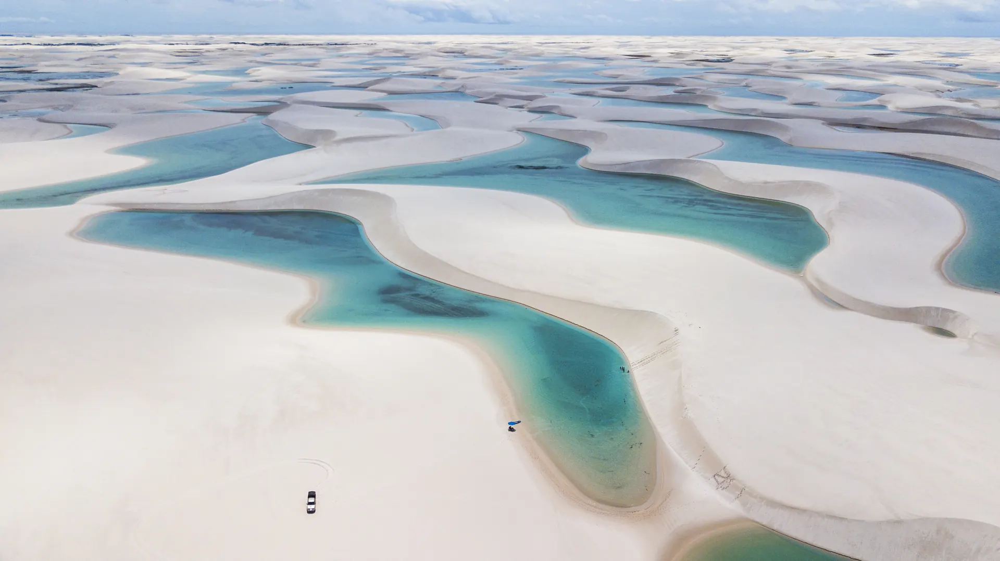
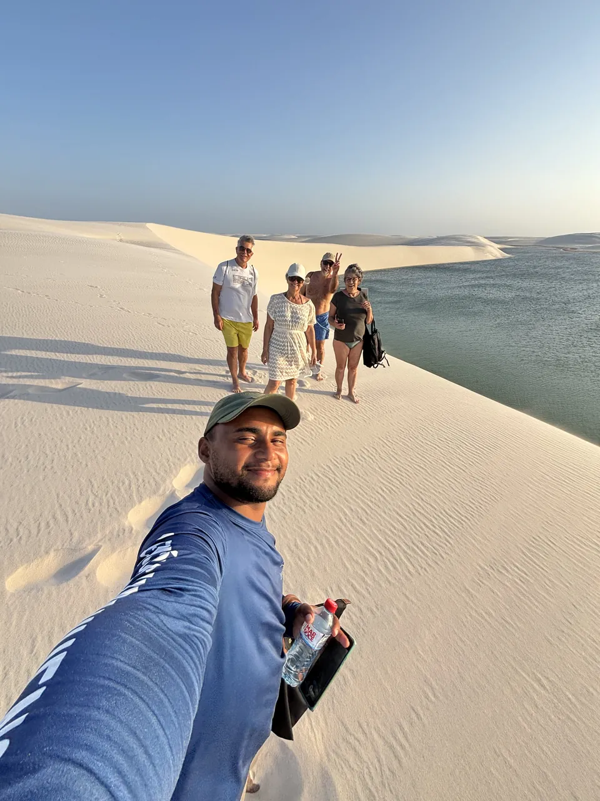
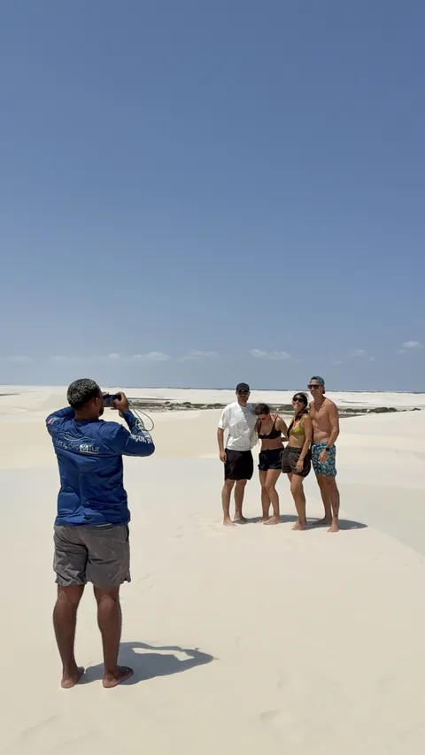
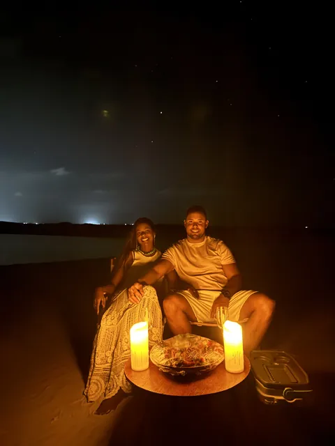

Viva sua melhor experiência nos Lençóis.
Lagoas cristalinas, pôr do sol nas dunas, a revoada dos guarás e o céu estrelado. Passeios em 4x4, barco e quadriciclo saindo de Santo Amaro.

na trilha
nas dunas
à noiteSanto Amaro é o nosso ponto de partida.
De Santo Amaro do Maranhão saem alguns dos roteiros mais bonitos do Parque Nacional dos Lençóis Maranhenses: lagoas que quase ninguém visita, dunas a perder de vista e povoados onde o almoço vem com rede para descansar.
A Lençóis MTur monta passeios para todos os ritmos, do dia inteiro nas lagoas às experiências do fim da tarde e da noite. Você escolhe, chama no WhatsApp e a gente organiza o resto.
Escolha o seu passeio.
Filtre pelo tempo que você tem. Toque em um passeio para ver o roteiro completo, o que não está incluso e reservar direto pelo WhatsApp.
Do café da manhã às estrelas.
Veja em que horário cada passeio acontece e combine mais de um no mesmo dia, por exemplo um passeio de manhã com a revoada ou as estrelas à noite.
Arraste para o lado para ver o dia inteiro.
dica: a taxa municipal de R$ 10,00 vale por 3 dias, então dá para fazer vários passeios com a mesma taxa.
Três paradas até a duna.
Escolha o roteiro
Veja os passeios e o horário de cada um. Na dúvida, a gente ajuda a montar a programação dos seus dias em Santo Amaro.
Chame no WhatsApp
Mande o passeio, a data e quantas pessoas vão. Você recebe o valor, o horário e o ponto de encontro.
Aproveite
Com tudo confirmado, é chegar no horário com protetor solar, roupa de banho e câmera carregada.
Antes de arrumar a mala.
Pergunte direto pra gente. A resposta vem pelo WhatsApp.
Perguntar no WhatsAppExiste alguma taxa além do passeio?
Sim. Santo Amaro cobra uma taxa municipal de R$ 10,00, válida por 3 dias, que não está inclusa nos passeios. No Circuito Betânia, dependendo da época, também há uma taxa de travessia de R$ 10,00.
O almoço está incluso?
Os circuitos de dia inteiro (Betânia, Ponta Verde e Rancharia) têm parada para almoço na comunidade, com descanso em redes. No Betânia o almoço é pago à parte. Confirme os detalhes do seu roteiro pelo WhatsApp.
Tenho pouco tempo. Qual passeio escolher?
Os de meio período cabem em uma manhã ou uma tarde: Andorinhas e Gaivota (09h às 12h ou 14h às 18h, com pôr do sol) e América (09h às 12h ou 14h às 17h). No fim do dia, dá para incluir a Revoada dos Guarás, a partir das 16h, ou a Contemplação das Estrelas, às 19h.
Vocês buscam na hospedagem?
Nos circuitos Betânia e Ponta Verde, o 4x4 busca você na hospedagem no início do passeio. Nos outros roteiros, o ponto de encontro é combinado na reserva.
Dá para fazer passeio de quadriciclo?
Sim. O Circuito Andorinhas e Gaivota, ideal para quem busca aventura, também pode ser feito de quadriciclo.
Qual é o passeio mais tranquilo?
O Circuito América. O trajeto é de voadeira (barco) pelo encontro do Rio Alegre com o Lago Jangada e termina na Lagoa do América, com muita sombra e pouco movimento.
Quanto custam os passeios?
O valor depende do roteiro, da data e do número de pessoas. Chame no WhatsApp com essas informações e receba o valor certinho para o seu grupo.
Fotos que não precisam de filtro.
Mais fotos e vídeos dos passeios no Instagram @lencoismtur.
Sua vaga começa com um “oi”.
Diga qual passeio você quer, a data e quantas pessoas vão. A gente responde com valor, horário e tudo o que você precisa levar.